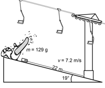

|
18. While snowboarding, Jonah falls down and
his cell phone goes sliding out of his pocket. The cell phone has a mass of 129 g. When it leaves
Jonah’s pocket, the cell phone slides on the ice with an initial velocity of
7.2 m/s downhill, sliding directly toward a chairlift pole 22 m
away. The icy hill is sloped at a consistent angle of 19°.
When it hits the pole, the phone will be destroyed beyond repair if it is
going faster than 12.6 m/s. |
|||||||
Snowboarding Incident
 |
|||||||
|
What is
the cell phone’s speed when it hits the pole? Will Jonah’s cell phone be
destroyed? Show all your work. Neglect frictional
forces. The cell phone’s speed when it hits the pole is . Jonah’s
cell phone will be destroyed o OR Jonah’s cell phone will not be destroyed o. (Check one box.)
|